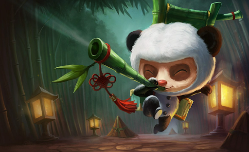

League of Legends
League of Legends (abbreviated LoL or League) is a 2009 multiplayer online battle arena video game developed and published by Riot Games for Microsoft Windows and macOS. The founders of Riot Games were inspired by the Warcraft III mod Defense of the Ancients, and developed a standalone game in the same genre. Since its release on October 27, 2009, the game has followed a freemium model. League of Legends is often cited as the world's largest esport, with an international competitive scene. The 2019 League of Legends World Championship had over 100 million unique viewers, peaking at a concurrent viewership of 44 million, with a minimum prize pool of US$2.5 million.
The game is placed by two teams of five players in player versus player combat, with each team occupying and defending their own separate base on the map. Each of the ten players controls a character, known as a "champion", with unique abilities and differing styles of play. During a match champions become more powerful by purchasing items and collecting experience points to level up in order to defeat the opposing team. In the game's main mode, Summoner's Rift, a team wins by being the first to destroy the other team's "Nexus", a large structure located within their base.
League of Legends received generally positive reviews, earning praise for its accessibility, character designs, and production value. By July 2012, it was the most played PC game in North America and Europe in terms of number of hours played. The game has a large following on streaming platforms, such as YouTube and Twitch, and its popularity has led to merchandise and tie-ins, such as music videos, comic books, short stories, collectible figurines, and an upcoming animated series. Promotional materials for in-game cosmetics has attracted mainstream attention, such as virtual K-pop group K/DA, composed of four champions. The game's success has spawned several spin-offs, such as a mobile version and a digital collectible card game. A massively multiplayer online role-playing game based on League is in development.
- from Wikipedia (https://en.wikipedia.org/wiki/League_of_Legends)